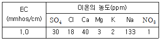
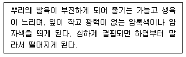
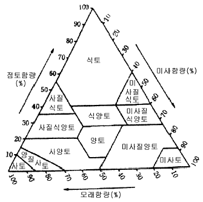

시설원예기사 (2004-08-08 기출문제)
1과목: 원예학개론
1. 화훼류에 피해를 낳게 하는 다음 벌레 중 농약에 대하여 내성이 가장 잘 생겨 농약 종류를 바꾸어 가며 뿌려야 하는 것은 다음 어느 것인가?
- 진딧물류
- 털벌레류
- 깍지벌레류
- 응애류
(정답률: 알수없음)

2. 다음 중 단일 식물이 아닌 화훼는?
- 코스모스
- 나팔꽃
- 포인세티아
- 금어초
(정답률: 알수없음)
3. 포도의 화진현상에 관한 설명 중 옳지 않은 것은?
- 거봉에 많으며 우리나라 주요 품종인 캠벨어얼리에도 발생한다.
- 개화기에 온도가 부족하면 수정율이 낮아져서 심하게 발생한다.
- 붕소가 결핍된 토양 조건하에서 심하게 발생한다.
- 결과모지의 연령이 오래된 것에서는 발생이 거의 없다.
(정답률: 알수없음)
4. 영양번식을 하는 채소에 있어서 가장 좋은 무병주 육성 방법은?
- 생장점 배양
- 종자소독
- 약제에 의한 소독
- 열처리
(정답률: 알수없음)
5. 지상부가 생육하는 도중에 화아분화가 일어나는 구근은?
- 백합
- 튤립
- 수선
- 히야신스
(정답률: 알수없음)
6. 글라디올러스의 촉성재배에 가장 필요치 않은 사항은?
- 구근의 휴면타파
- 적온의 유지
- 화아분화기의 장일처리
- 생육 중인 식물체의 춘화처리
(정답률: 알수없음)
7. 다음 사과대목 중 10a당 100주 정도의 밀식재배에 적당한 것은?
- M 27
- M 26
- M 7
- MM 106
(정답률: 알수없음)
8. 사과의 점무늬낙엽병에 방제 효과가 없는 것은?
- 이프로 수화제
- 포리옥신 수화제
- 누리만 수화제
- 지오판 수화제
(정답률: 알수없음)
9. 화훼류 삽목(꺾꽂이)발근과 관계 있는 생장 조절제는 다음 중 어느 것인가?
- 지베렐린
- 옥신
- 키네틴
- 에칠렌
(정답률: 알수없음)
10. M 25와 같은 왜성대목묘를 밀식재배(密植栽培)할 때 적용되는 정지법은?
- 방추형(紡錘形)
- 변칙주간형(變則主幹形)
- 배상형(盃狀形)
- 개심자연형(開心自然形)
(정답률: 알수없음)
11. 글라디올러스의 촉성에서 발아를 촉진시키는데 쓰이는 효과적인 약품은?
- Maleic Hydrazide
- Abscisic acid
- Phosfon - D
- Ethylene Chlorohydrin
(정답률: 알수없음)
12. 다음 설명 중 옳은 것은?
- Kalanchoe는 20℃ 이상의 고온과 장일에서 개화가 촉진된다.
- 가재발 선인장은 25℃ 이상의 고온과 장일에서 개화한다.
- Cineraria는 고온· 장일에서 화아분화가 촉진된다.
- Stock은 13℃에서 일주일간 저온처리 함으로서 화아분화가 촉진된다.
(정답률: 알수없음)
13. 딸기의 휴면을 속히 타파하려고 할 때 그 처리효과가 가장 적은 것은?
- 저온처리
- 단일처리
- 지베렐린처리
- 광중단처리
(정답률: 알수없음)
14. 시설채소 재배에서 1일 중 시설물 내의 CO2 농도가 가장 낮은 때는?
- 해뜨기 전
- 해뜬 직후
- 정오 때
- 저녁 때
(정답률: 알수없음)
15. 다음 중 가장 단명인(수명 1∼2년) 채소 종자는?
- 무와 배추종자
- 쑥갓과 수박종자
- 호박과 가지종자
- 양파와 시금치종자
(정답률: 알수없음)
16. 난지형(暖地型)마늘의 특성을 설명한 것 중 옳지 않은 것은?
- 휴면기간이 한지형에 비하여 짧다.
- 숙기가 빠르다.
- 매운 맛이 적다.
- 저장성이 한지형보다 좋다.
(정답률: 알수없음)
17. 무 바람들이(pithiness)현상은 어느 부분에서 많이 생기는가?
- 체부조직
- 목부의 유조직
- 통도조직
- 표피조직
(정답률: 알수없음)
18. 마늘과 양파의 인경 비대에 가장 절대적인 영향을 미치는 요인은?
- 일장
- 수분
- 질소영양
- 토성
(정답률: 알수없음)
19. 사과에 있어서 붕소결핍에 의하여 생기는 병은?
- 고두병
- 축과병
- 탄저병
- 적진병
(정답률: 알수없음)
20. 복숭아 대목 양성용 종자로 가장 알맞는 것은?
- 창방조생(倉方早生)
- 백도(白桃)
- 대화조생(大和早生)
- 포목조생(布目早生)
(정답률: 알수없음)
2과목: 시설원예학
21. NFT방식은 어떠한 양액재배 방식인가?
- 담액형 수경방식
- 순환식 수경방식
- 분무형 수경방식
- 고형배지경 방식
(정답률: 알수없음)
22. 면적 300평인 플라스틱하우스 (난방부하계수: 5.7 kcal/m2/h/℃)에서 하우스내 온도를 10℃로 유지하려고 할 때의 최대난방부하는? (단, 외기온 -10℃, 하우스표면적 1,500m2이며, 폴리에 틸렌 1층 커텐(열절감율 0.35)이 설치되어 있음)
- 111,000 kcal/h
- 111,150 kcal/h
- 111,300 kcal/h
- 111,450 kcal/h
(정답률: 알수없음)
23. 온실 내 작물의 생산성과 품질을 향상시킬 목적으로 CO2시용을 할 때 가장 높은 농도를 필요로 하는 작물은?
- 엽채류
- 토마토, 가지
- 오이, 피망
- 멜론, 딸기
(정답률: 알수없음)
24. 온실내 토양에서 한계농도 이상의 염류농도를 나타내면 작물에 중요한 증상이 나타난다. 그 증상이 아닌 것은?
- 잎의 가장자리가 안으로 말린다.
- 잎의 색이 진하며, 잎의 표면이 정상적인 잎 보다 더 윤택이 난다.
- 칼슘 또는 마그네슘 결핍 증상이 나타난다.
- 장해를 받고 있는 뿌리는 뿌리털이 많고, 길이가 길며, 갈색으로 변한다.
(정답률: 알수없음)
25. 스팬의 길이가 2 m인 단순보의 중앙에 집중하중 10 kN이 작용할 때, 최대 휨모멘트의 크기는?
- 2 kNㆍm
- 5 kNㆍm
- 10 kNㆍm
- 20 kNㆍm
(정답률: 알수없음)
26. 어느 양액재배 농가의 원수의 수질분석 결과가 아래의 표와 같다면 이 원수로 양액재배시 가장 문제시 될 수 있는 원소는?

- SO4
- Cl
- Na
- NO3
(정답률: 알수없음)
27. 광합성 반응에 반드시 필요한 것은?
- 이산화탄소
- 산소
- 질소
- 오존
(정답률: 알수없음)
28. 토마토의 배꼽썩음병의 원인은?
- Ca 결핍
- 광합성량 부족
- TMV 감염
- 강한 직사광선
(정답률: 알수없음)
29. 시설내 투과광의 파장(광질)이 작물생육에 미치는 영향 중 가장 옳은 것은?
- 가시부의 510~610 nm가 광합성에 가장 유효하며 자외부와 적외부도 생육에 영향을 미친다.
- 가시부의 510~610 nm가 광합성에 가장 유효하며 자외부와 적외부는 생육에 영향을 미치지 않는다.
- 가시부의 610~710 nm가 광합성에 가장 유효하며 자외부와 적외부는 생육에 영향을 미치지 않는다.
- 가시부의 610~700 nm가 광합성에 가장 유효하며 자외부와 적외부도 생육에 영향을 미친다.
(정답률: 알수없음)
30. 시설내 작물 재배에서 유효수분의 pF의 범위는?
- 0∼1.0
- 1.0∼1.8
- 1.8∼4.2
- 3.8∼4.2
(정답률: 알수없음)
31. 양액재배시 식물의 뿌리가 Ca를 많이 흡수하게 되면 배지 내의 산도(pH)는 어떻게 변하는가?
- pH가 상승한다
- pH가 하강한다.
- pH의 변화가 없다
- pH가 상승하다가 하강한다.
(정답률: 알수없음)
32. 토양용액의 양분농도를 측정할 때 사용되는 기기는?
- pH meter
- EC meter
- CEC meter
- ORP meter
(정답률: 알수없음)
33. 묘의 대량생산을 위해서 선행되어야 할 사항 중 거리가 먼 항은?
- 온실의 대형화· 연동화
- 파종시스템의 자동화
- 상토의 규격화· 경량화
- 용기의 표준화· 규격화
(정답률: 알수없음)
34. 과수의 시설재배용 품종의 특성으로 적합치 않은 것은?
- 판매가격이 높은 것
- 시설재배시 장해 발생이 적고 재배하기 쉬운 것
- 품질 향상 효과가 현저한 것
- 만생계로 조기출하가 가능한 것
(정답률: 알수없음)
35. 온실내 투광량 감소에 가장 큰 영향을 미치는 것은?
- 골재의 종류와 크기
- 다중피복
- 시설의 방향
- 온실의 구조와 형태
(정답률: 알수없음)
36. 장파 투과율이 가장 낮은 피복재는?
- PE 필름
- PVC 필름
- EVA 필름
- FRA 필름
(정답률: 알수없음)
37. 다음에서 설명하는 증상은 고추의 어떤 요소 결핍시 발생 되는 증상인가?

- 질소
- 인산
- 칼륨
- 황
(정답률: 알수없음)
38. 온실 피복재 중 연질자재로 짝지은 것은 다음 중 어느 것인가?
- PE, FRP, PET
- PE, FRP, EVA
- PE, PVC, PET
- PE, PVC, EVA
(정답률: 알수없음)
39. 공장식 생산시스템을 가진 식물공장의 특성을 잘못 표현한 것은?
- 계획생산과 주년생산 가능
- 실내환경의 완전제어 가능
- 작업의 자동화시스템 도입
- 자연광의 효율성을 최대화
(정답률: 알수없음)
40. 식물의 형태 형성작용에 관여하는 파장(nm)은?
- 1,000∼700 nm
- 610∼510 nm
- 400∼315 nm
- 315∼280 nm
(정답률: 알수없음)
3과목: 재배학원론
41. Q10 (온도계수)이란 무엇을 의미하는가?
- 온도가 10℃ 상승함에 따라 광합성량이 몇 배 증가하는가를 나타냄
- 온도가 10℃ 변함에 따라 증산량과 호흡량이 몇 배나 변하는가를 나타냄
- 온도가 10℃ 상승함에 따라 호흡량이 몇 배가 되는가를 나타냄
- 온도가 10℃ 변함에 따라 호흡량과 광합성량이 몇 배나 변화하는가를 나타냄
(정답률: 알수없음)
42. 온실환경제어를 위한 기기 중 보온커튼 제어에 적합한 방법은?
- on/off 제어
- PID 제어
- 프로세스 제어
- 서보제어
(정답률: 알수없음)
43. 시설토양에 다량의 물을 관수하는 담수처리의 효과로 옳은 것은?
- 다량의 염류 제거
- 충분한 수분의 공급
- 토양의 물리성 개선
- 토양전염성 병해 방지
(정답률: 알수없음)
44. 시설원예작물의 합리적인 4단 변온관리 모델의 순서가 옳은 것은?
- 조기가온 → 광합성촉진온도 → 전류촉진온도 → 호흡 억제온도
- 조기가온 → 전류촉진온도 → 광합성촉진온도 → 호흡 억제온도
- 조기가온 → 호흡억제온도 → 광합성촉진온도 → 전류 촉진온도
- 조기가온 → 광합성촉진온도 → 호흡억제온도 → 전류 촉진온도
(정답률: 알수없음)
45. 시설 내 토양 수분환경의 특이성 중 틀린 것은?
- 증발산량이 많아 토양이 건조하기 쉬움
- 자연강수에 의한 수분공급 없음
- 단열층이 지하수의 이동 촉진
- 시설내의 관수는 주로 관수효과 이용
(정답률: 알수없음)
46. 다음의 물질 중 열전도율이 가장 높은 것은?
- PE 필름
- PVC 필름
- 유리판
- 아크릴(MMA)
(정답률: 알수없음)
47. 프러그 육묘용 상토 자재 중 pH가 가장 높은 것은?
- 피트모스
- 펄라이트
- 버미큘라이트
- 마사토
(정답률: 알수없음)
48. 플러그묘 생산과정에서 묘의 절간 생육조절에 적합하지 않은 방법은?
- 물리적 자극
- 주야간 온도조절(DIF)
- GA3 처리
- 상토내 수분과 양분조절
(정답률: 알수없음)
49. 다음 중 광 투과율이 높은 순으로 된 것은?
- PE > PVC > EVA
- PVC > PC > EVA
- EVA > PE > PVC
- PE > EVA > PVC
(정답률: 알수없음)
50. 다음 중 양액의 측정단위 중 농도를 나타낸 것은?
- pH
- EC
- ORP
- CEC
(정답률: 알수없음)
51. 시설내 광환경의 특성으로 볼 수 없는 것은?
- 광량의 일변화 차이가 노지에 비해 작다.
- 시설내 광 분포가 균일하다.
- 시설내 광질이 노지와 다르다
- 시설내 작물이 클수록 하단부의 광량은 적다.
(정답률: 알수없음)
52. 다음 중 계측입력 항목과 조절출력 항목간의 연결이 가장 올바른 것은?
- 배양액탱크수위계 - 용수탱크
- 배지내 함수율계 - 양액혼합펌프
- 근권EC계 - 질산펌프
- 증발계 - 배양액 공급펌프
(정답률: 알수없음)
53. 온실의 광투과율을 높이기 위해서는 지붕의 경사각이 중요하다. 피복재의 입사각과 광투율이 바르게 정리된 것은?
- 입사각이 10 ~ 30° 에서 광투과율이 감소하기 시작하여 30 ~ 60° 에서 급격히 감소한다.
- 입사각이 30 ~ 60° 에서 광투과율이 감소하기 시작하여 60 ~ 90° 에서 급격히 감소한다.
- 입사각이 30 ~ 60° 에서 광투과율이 감소하기 시작하여 10 ~ 30° 에서 급격히 감소한다.
- 입사각이 60 ~ 90° 에서 광투과율이 감소하기 시작하여 30 ~ 90° 에서 급격히 감소한다.
(정답률: 알수없음)
54. 주요 채소의 배꼽썩음 병이 발생할 수 있는 요인은?
- 토양의 적습
- 암모니아태 질소의 결핍
- 뿌리의 활력 강화
- 석회의 결핍
(정답률: 알수없음)
55. 방화곤충인 꿀벌이나 꽃등애 등의 활동을 저해하는 피복제는?
- PE
- EVA
- PC
- FRA
(정답률: 알수없음)
56. 일정기간 동안의 건물 생산능력을 무엇이라 하는가?
- 총광합성율
- 증산율
- 순광합성율
- 상대생장률
(정답률: 알수없음)
57. 시설재배에서의 1m2당 관수량을 다음의 조건에서 계산하시오? (조건: 30㎝의 토층에 포장용수량이 24 %, 관수직전 토양함수량 21 %, 감량을 고려한 관수효율 90 % 일 때)
- 10 mm
- 9 mm
- 90 mm
- 100 mm
(정답률: 알수없음)
58. 시설내 토양환경 개선법으로 이용할 수 없는 것은?
- 객토
- 심경
- 작부체계 개선
- 관수 시기조절
(정답률: 알수없음)
59. 온도계측에 관한 설명이 바르게 된 것은?
- 시설내 온도와 측정하고자 하는 지점의 온도차를 계측하는 것을 말한다.
- 열팽창, 열전기, 전기저항, 대류 등의 원리를 이용한다.
- 열팽창, 열전기, 전기저항, 복사 등의 원리를 이용한다.
- 대류, 열전기, 전기저항, 복사 등의 원리를 이용한다.
(정답률: 알수없음)
60. 시설내에 발생되는 현상 중 맞는 것은?
- 시설내의 투광량이 높아지면 시설내 온도는 낮아진다.
- 시설내의 습도는 병 발생과 무관하다.
- 시설내의 온도는 식물체내의 삼투압, 기공개폐 및 증산작용 등에 영향을 준다.
- 겨울철 시설내의 탄산가스는 낮에는 상승하고, 밤에는 저하된다.
(정답률: 알수없음)
4과목: 작물생리학
61. 순 광합성량(net assimilation)을 증대시키기 위한 환경 조건이 아닌 것은?
- 공기 중의 탄산가스 함량을 어느 정도 높여준다.
- 광포화점에 이르기까지 광도를 높여준다.
- 공기 중의 산소함량을 어느 정도 낮추어준다.
- 온도를 높게하여 각종 생화학 반응 및 대사를 촉진 시킨다.
(정답률: 알수없음)
62. 작물의 꽃눈형성에 관여하는 주요 환경요인은?
- 유년성과 광주기성
- 유년성과 감온성
- 광주기성과 감온성
- 춘화현상과 감온성
(정답률: 알수없음)
63. 저온처리(低溫處理)의 대신으로 그 효과가 큰 것은?
- OED
- Gibberellin
- MH
- MO
(정답률: 알수없음)
64. 다음 중 기공의 개폐에 관여하며 수분스트레스를 받으면 증가하게 되는 식물호르몬은?
- 지베렐린(GA)
- 아브시스산(ABA)
- 옥신(Auxin)
- 시토키닌(Cytokinin)
(정답률: 알수없음)
65. 나무 줄기의 환상박피로 확인할 수 있는 것은?
- 물의 상승통로는 도관부이다.
- 물의 하강이동은 불가능하다.
- 물의 횡방향이동은 불가능하다.
- 물의 배출은 잎에서만 가능하다.
(정답률: 알수없음)
66. C4-회로에서 생성되지 않는 산은?
- 옥살아세트산
- 능금산
- 아스파라긴산
- 인-글리세린산
(정답률: 알수없음)
67. 배낭내의 핵이 분열하여 수정 직전에 형성하는 조세포는 몇 개인가?
- 1개
- 2개
- 3개
- 4개
(정답률: 알수없음)
68. 삼투현상에 대한 다음의 설명 중 맞는 것은?
- 반투막을 사이에 두고 물이 용액속으로 확산되는 현상
- 반투막을 사이에 두고 용질만이 농도에 따라 이동하는 현상
- 반투막을 사이에 두고 용질과 용매가 서로 다른 방향으로 이동하는 현상
- 온도에 따라서는 영향을 받지 않는 확산 현상
(정답률: 알수없음)
69. 다음 무기 성분 중 작물에 필요치 않은 것은?
- 알루미늄
- 석회
- 구리
- 인산
(정답률: 알수없음)
70. 다음 식 중 세포의 흡수력을 표시하고 있는 것은?
- (세포의 팽압) - (세포액의 삼투압)
- (세포액의 삼투압) - (물의 확산압차)
- (세포액의 삼투압) - (확산압낙차)
- (세포액의 삼투압) - (세포의 팽압)
(정답률: 알수없음)
71. 기공의 개폐와 직접 관련이 있는 것은?
- NO3-
- SO42-
- K+
- Ca2+
(정답률: 알수없음)
72. 춘화처리(Vernalization)를 하는 이유는?
- 개화(開花)의 유도
- 발아(發芽)의 유도
- 발근(發根)의 유도
- 생장(生長)의 유도
(정답률: 알수없음)
73. 탄소동화작용에 의해 생성된 동화물질은 다음과 같은 역할을 한다. 그 중 합당치 않은 것은?
- 원형질과 세포막물질을 만듬
- 저장전분을 형성.
- 잎 표면에서 규질화 작용
- 단백질과 호흡에너지를 생성.
(정답률: 알수없음)
74. 양분결핍증상의 하나인 황화현상(chlorosis)을 일으키는 원소와 가장 관련이 깊은 것은?
- P
- N
- Cl
- Mo
(정답률: 알수없음)
75. 다음 중 단위결과를 유도할 수 없는 생장조절물질은?
- Gibberellin
- PCA
- NAA
- ABA
(정답률: 알수없음)
76. 종자내에 많으며 인산의 저장형태로 중요한 것은?
- 전분
- DNA
- 피틴(phytin)
- 글루타민(glutamine)
(정답률: 알수없음)
77. 종자가 발아할 때 β -amylase에 의하여 전분이 분해되면 주된 생성물은 무엇인가?
- 포도당 (glucose)
- 과당 (fructose)
- 맥아당 (maltose)
- 자당 (sucrose)
(정답률: 알수없음)
78. 작물이 무기양분을 흡수할 경우 어느 특정 양분을 다량 흡수하면 다른 양분의 흡수가 억제되는 현상이 나타난다. 이 현상과 관계 깊은 것은?
- 질소(N)와 인산(P)
- 인산(P)과 몰리브텐(Mo)
- 철(Fe)과 인산(P)
- 규산(Sio2)과 고토(Mg)
(정답률: 알수없음)
79. 식물 종자의 생사 여부 또는 활력 정도를 단시간내에 검정할 수 있는 tetrazolium test는 어떠한 원리로 착색반응이 다르게 나타나는가?
- 종자의 호흡에서 발생하는 CO2 때문임
- 종자가 발아하면서 외부에서 흡수하는 CO2 때문임
- 호흡에서 발생되는 H2 때문임
- 호흡과 함께 발생하는 소량의 에너지 때문임
(정답률: 알수없음)
80. 다음 중 복막구조로 되어 있는 것은?
- 골지장치
- 액포
- 페록시솜
- 미토콘드리아
(정답률: 알수없음)
5과목: 수경재배학
81. 요소는 암모니아 외에 어떤 물질을 원료로 만드는가?
- 염산가스
- 황산가스
- 탄산가스
- 석탄가스
(정답률: 알수없음)
82. 양분의 흡수에 대한 설명으로 옳지 않은 것은?
- 작물의 뿌리를 통한 양분의 흡수속도는 처음에는 느리나 시간이 지나면 빨라진다.
- 작물의 뿌리가 건전하지 못한 작물에는 엽면시비가 더 효과적이다.
- 뿌리의 대부분을 차지하는 것은 성숙부이고 양분과 수분을 흡수하는 힘은 거의 없고 흡수한 것을 옳겨주는 역할만을 한다.
- 양분및 수분을 가장 많이 흡수하는 부분은 뿌리 끝에서 몇 cm 떨어진 뿌리털이 가장 많은 곳이다.
(정답률: 알수없음)
83. 과린산석회 비료와 배합하면 수용성 인산의 일부가 불용성으로 변하는 비료는?
- 석회질소
- 황산암모늄
- 황산칼륨
- 유기질비료
(정답률: 알수없음)
84. 토양생성작용이 아닌 것은?
- podsol화 작용
- form화 작용
- 석회화 작용
- glei화 작용
(정답률: 알수없음)
85. 모래, 미사, 점토함량이 각각 20 %, 30 %, 50 % 인 어떤 토양의 토성을 미국 농무성법의 다음 토성구분삼각도에 따라 분류하면?

- 식양토
- 사질식양토
- 양토
- 식토
(정답률: 알수없음)
86. 어느 토양 100g에 치환성 Ca 40 mg, Mg 24 mg, K 39 mg, Na 23 mg이 흡착되어 있다면 이 토양의 C.E.C는? (단, Ca=40, Mg=24, K=39, Na=23)
- 3 cmol/1kg
- 4 cmol/1kg
- 5 cmol/1kg
- 6 cmol/1kg
(정답률: 알수없음)
87. 토양 pH와 염기 포화도와의 관계는?
- 토양 pH가 낮을수록 염기포화도는 높다.
- 토양 pH와 염기포화도는 관계가 없다.
- 토양 pH가 높을수록 염기포화도는 낮다.
- 토양 pH가 낮을수록 염기포화도는 낮다.
(정답률: 알수없음)
88. 식물생육에 필요한 원소 중 미량원소로 분류되는 것은?
- Ca
- O
- B
- S
(정답률: 알수없음)
89. 녹색의 고등식물에 광선을 비치지 않는 경우 나타나는 주된 증상은?
- 기공이 막혀 물의 증산과 호흡이 억제된다.
- 기공이 열려 물의 증산과 호흡이 증가된다.
- 양분의 흡수가 증가된다.
- 칼슘이나 마그네슘보다 질소, 인산, 칼륨의 흡수율이 높아진다.
(정답률: 알수없음)
90. 토양을 구성하고 있는 화학성분 중 가장 많은 것은?
- SiO2
- Al2O3
- Fe2O3
- K2O
(정답률: 알수없음)
91. 요소와 석회질소를 각각 성분량으로 등량 시비 하였더니 요소시비구는 450 kg/10a, 석회질소시비구는 442 kg/10a의 수량을 얻었으며, 이 때의 무비료구 수량은 300 kg/10a 였다. 석회질소의 비효가는 얼마인가?
- 약 95 %
- 약 87 %
- 약 78 %
- 약 66 %
(정답률: 알수없음)
92. 토양층위의 부호 중 반층(盤層: fragipan)의 특성을 표시하는 것은?
- h
- f
- t
- x
(정답률: 알수없음)
93. 흡습성이 매우 커서 방습처리하여 저장하여야 하며, 화기의 접근 등 관리에 주의를 요하는 비료는?
- 요소
- 질산암모늄
- 황산암모늄
- 황산칼륨
(정답률: 알수없음)
94. 요소를 가수분해 시키는 효소는?
- Urease
- Uricase
- Carbonic anhydrase
- Arginase
(정답률: 알수없음)
95. 다음 중 부식산(humic acid)과 거리가 먼 것은?
- 부식산은 황갈색에서 흑갈색을 띤다.
- 알칼리에는 녹고 알콜에는 녹지 않는다.
- 물에 잘 녹는다.
- 양이온 치환 용량이 매우 높다.
(정답률: 알수없음)
96. 유효질소 30 kg 이 필요한 경우에 요소(N 46 %, 흡수율 83 %)로써 질소 비료를 충당한다면 필요한 요소량은?
- 36.2 kg
- 57.4 kg
- 78.6 kg
- 117.9 kg
(정답률: 알수없음)
97. 석회를 과잉 시비한 곳에 결핍 현상을 나타내는 성분은?
- B
- Zn
- Mo
- Mn
(정답률: 알수없음)
98. 어느 토양의 소성한계(plastic limit; PL)가 40 % 이고 액성한계(liquid limit; LL)가 60 % 일 때 이 토양의 소성계수(plastic index 또는 plastic number)는?
- 20
- 67
- 60
- 33.3
(정답률: 알수없음)
99. 토양의 치환성 양이온 중 가장 침출되기 어려운 것은?
- Ca2+
- Mg2+
- K+
- Na+
(정답률: 알수없음)
100. 수용성 인산의 주성분은?
- 인산 1칼슘
- 인산 2칼슘
- 인산 3칼슘
- 인산 4칼슘
(정답률: 알수없음)